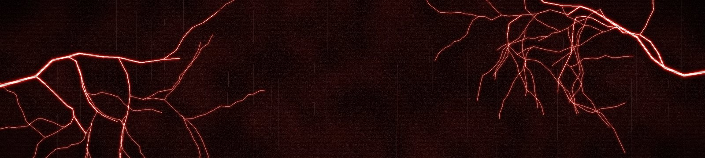
МАНУАЛ / 0.2
Прошивка для M-VAVE FM-1 под мрачный индастриал и EBM: четыре дорожки, секвенсор с локами, драмы, перегруз и живые эффекты.
Шпаргалка
Всё, чего нет на панели, на одном экране.
| Что сделать | Что будет |
|---|---|
| Любая кнопка | нажать = её страницы, ещё раз = следующая; держать = её слой; двойное нажатие = слой остаётся открытым |
| ALGORITHM / PRESETS / SELECT | дорожка / звук / темп, на любой странице |
| SAVE держать | отмена (ещё раз: вернуть) |
| HOME держать | меню |
| Стоп, SAVE, K1, OCT+, OCT+ | сохранить звук в пользовательский слот |
| REC | запись на дорожку: в стопе на STEP клавиши пишут шаги, на ходу пишут вживую |
| STEP: держать шаг + ручка | лок: значение только на этом шаге |
| STEP: держать шаг + EDIT | снять локи шага |
| Драм-сетка | чёрные выбирают линию, белые это шаги 1-16 |
| SEQ держать + F5 / G5 | DICE (новая партия) / MOOD (следующее настроение) |
| SEQ держать + K1-K4 | LEN, DIV, SWING, GATE |
| SEQ держать + OCT− | дорожка как была до слоя |
| EDIT держать + белая | движок |
| EDIT держать + E5 / F5 / G5 | INIT / CLEAN / OOPS (счастливая случайность) |
| FX держать + белая | эффект включить, ещё раз: выключить |
| FX держать + OCT− | выключить все эффекты |
| FX держать + чёрная | мьют дорожки |
| FX держать + SELECT | СТЕНА, от тишины до стены |
| FX держать, держать клавишу + PRESETS | другой эффект на эту клавишу (EDIT: вернуть) |
| GLO держать | F#3-C#4 мьют, F3-B3 соло, C4 снять мьюты, D4 MIDI LEARN, E4 FILL, F4 TAP, K1-K4 громкости |
| GLO держать + SELECT | темп (если SELECT занят другим) |
| SCL держать + клавиша | тоника |
| LFO держать + ручка | MOMENTARY: отпустил, значение вернулось (OCT+ оставит) |
| FX > DAMAGE, K1-K4 | DMG (износ), CHAR (плёнка или цифра), WALL (от тишины до стены), HISS (шум плёнки) |
| MIDI CC85 / CC86 | СТЕНА / DAMAGE |
- Шпаргалка
- Установка
- Панель
- Первые пять минут
- Как менять звуки
- Движок GLCH
- HAPPY ACCIDENT (OOPS)
- Секвенсор
- Драмы
- SEQ TOOLS
- DICE и настроения
- Живые эффекты
- Мьюты, соло, филлы, песни
- Эффекты: что есть что
- DAMAGE и СТЕНА
- Сохранение и отмена
- MIDI и USB-аудио
- Меню и экран
- Все звуки
- Авторы и исходники
Установка
- Подключи FM-1 по USB. Нужен Chrome или Edge на компьютере (установщику нужен Web MIDI).
- Открой установщик, нажми Connect, потом Install. Не выдёргивай кабель, пока не напишет, что готово.
- FM-1 перезагрузится с заставкой KRIECHSTROM. На компьютере устройство называется KRIECHSTROM (и MIDI, и аудио).
Проверено на FM-1 с новым чипом памяти. Проекты из Felucca открываются как есть. Вернуть официальную прошивку можно в том же установщике.
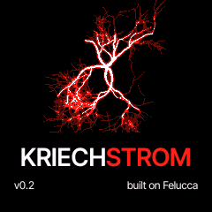
Панель
У каждой кнопки две роли: нажать = её страницы (ещё раз = следующая страница), держать = её слой, карта того, что сейчас делают клавиши. Двойное нажатие оставляет слой открытым без удержания. На страницах и в диалогах OCT+ выполняет, OCT− назад.
| Кнопка | Нажать | Держать |
|---|---|---|
| HOME | HOME, MIXER, CLOCK | меню |
| SEQ | STEP (пиано-ролл или драм-сетка), DETAIL, AUTOMATION | SEQ TOOLS (там же DICE) |
| GLO | SONG | мьюты, соло, FILL, TAP темпа, MIDI LEARN, громкости |
| SAVE | USER, PRESETS, PHRASES, PROJECT, TOOLS | отмена (UNDO) |
| LFO | LFO, LFO 2, LFO DEST, MOD | с ручкой: MOMENTARY (значение возвращается) |
| EDIT | EDIT 1, EDIT 2, страницы VOICE и страницы движка | движки на клавишах, INIT, CLEAN, OOPS |
| FX | SENDS, SLICER, PEDAL, PEDAL MIX, DELAY, REVERB, CHORUS, DAMAGE | живые эффекты на клавишах |
| SCL | SCL (лад), CHORD (аккорды) | любая клавиша ставит тонику |
| ENV, ARP | огибающая, арпеджиатор | |
| REC | включает запись на дорожку | CLEAR, CLICK, COUNT-IN, громкость клика |
| PLAY | старт / стоп |
| Ручка | Что делает |
|---|---|
| ALGORITHM | выбор дорожки 1-4, на любой странице |
| PRESETS | меняет звук дорожки на любой странице, кроме списков |
| SELECT | темп |
| K1 K2 K3 K4 | четыре карточки вверху экрана |
| MASTER | громкость |
Нижняя строка экрана всегда подсказывает, что делают кнопки на этой странице. HELP включён: при открытии страницы или слоя на две секунды появляется короткая подсказка.
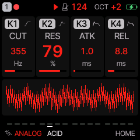
Первые пять минут
- Нажми PLAY. Пойдёт бит и бас.
- Крути ALGORITHM: выбираешь дорожку. Номер дорожки в левом верхнем углу.
- Крути PRESETS: звук этой дорожки меняется прямо на ходу. Паттерн остаётся.
- Играй на клавишах: они играют выбранной дорожкой.
- Держи SEQ и нажми F5 (DICE): у дорожки новая партия в текущем настроении. Ещё раз = другая.
- Держи FX и нажми белую клавишу: включится повтор, фильтр, остановка ленты и прочее. Ещё раз: выключится. OCT− при зажатом FX выключает всё.
- Не понравилось? Держи SAVE: отмена.
Как менять звуки
PRESETS
Крути PRESETS где угодно. Два нажатия SAVE открывают список PRESETS: K2 выбирает движок, K3 добавляет в избранное, K4 показывает одну категорию (BASS, LEAD, PAD, PLUCK, KEYS, DRUM, FX).
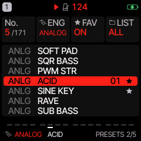
Движки
Держи EDIT: белые клавиши это движки. Нажал, и дорожка переключилась на этот движок с его первым звуком.
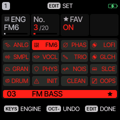
| Движок | Для чего |
|---|---|
| ANALOG | субтрактивный: басы, секвенции, лиды |
| FM6 | шестиоператорный FM: электропианино, колокола, металлические тембры |
| PHASE | фазовые искажения: пэды и лиды |
| LOFI | чиповые волновые таблицы |
| SAMPLE | пианино и другие сэмплы |
| VOICE | форманты: хоры, шёпот |
| TRIO | три осциллятора, жирные басы |
| GLCH | из Glitchbox: клиппинг, фолдер, резонансный фильтр, понижение разрядности, микрозаикание |
| GRAIN | гранулярные облака |
| PHYS | щипковые и ударные струны, металл |
| NOISE | шумы: помехи, ветер, сирены, гул |
| SLICE | нарезанный брейк |
| DRUM | драм-машина, восемь линий |
Редактирование
Нажми EDIT: на EDIT 1 и EDIT 2 восемь параметров движка на K1-K4. Дальше VOICE (поли / моно, глайд) и страницы самого движка. ENV огибающая, LFO LFO и матрица модуляции.
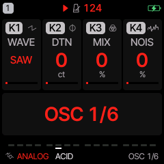
Держи LFO и крути ручку: это MOMENTARY, отпустил LFO, значение вернулось.
Движок GLCH
GLCH это осциллятор (15 волн: SAW, SQR, DUAL, RING, NOIS, FAT, FM, FMX, FUZZ, REES, 808, GRIT, GROW, SYNC, SUPR) в резонансный фильтр, клиппер и фолдер, понижение разрядности и микрозаикание, которое режет ноту на короткие куски. У большинства из 48 звуков уже стоит PEDAL (MUFF, BASS, SMASH, FUZZ, FOLD, CRUSH).
| Ручка | EDIT 1 | EDIT 2 |
|---|---|---|
| K1 | WAVE: волна | CRSH: битовый кранч |
| K2 | CUT: срез фильтра | GLCH: как часто влезает заикание |
| K3 | RES: резонанс, вплоть до самовозбуждения | SIZE: длина кусочка заикания |
| K4 | DRV: перегруз в клиппер | PJMP: скачки высоты между кусочками |
HAPPY ACCIDENT (OOPS)
Держи EDIT и нажми G5. Два-три параметра звука прыгают куда-то в сторону, иногда ещё и посыл
в эффект. На экране написано, что поменялось, например OOPS: CUT RES DLY. Нажми ещё, будет ещё. Поймал
что-то хорошее? Сохрани (SAVE > USER). Улетело не туда? Держи SAVE: звук вернётся таким, каким был до
первого OOPS.
Громкость, паттерн, движок и кит OOPS не трогает, так что дорожка продолжает играть в общей картине.
Секвенсор
У каждой дорожки свой паттерн до 64 шагов. Нажми SEQ: страница STEP. На синт-дорожке это пиано-ролл.
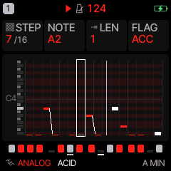
Ноты по шагам
- Останови. Открой SEQ > STEP. Нажми REC, дорожка готова к записи.
- Нажми клавишу (или аккорд: зажми клавиши вместе). Нота встаёт в шаг под курсором, курсор идёт дальше.
- K1 двигает курсор (STEP), K2 меняет ноту, K3 длину (через несколько шагов = залиговано), K4 флаги: ACCENT и SLIDE.
- Ещё раз REC, чтобы выйти из записи.
Ноты вживую
Нажми PLAY, потом REC и играй. Петля пишет всё, что ты играешь, с наложением на каждом круге. Твой тайминг сохраняется как NUDGE, а QUANTIZE на странице SCL решает, играть так, как ты сыграл, или по сетке. Держи REC: клик и отсчёт перед записью.
Локи: своё значение на одном шаге
На STEP держи шаг (его клавишу) и крути любую ручку: это значение будет только на этом шаге. Шаги с локами помечены точкой. Держи шаг и нажми EDIT, чтобы снять его локи.
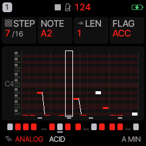
DETAIL и AUTOMATION
Ещё раз SEQ: DETAIL, у шага под курсором CHANCE (и условия 1:2, 3:4, FILL), RATCHET (2-4 удара в шаге), NUDGE и VELOCITY. Курсор тут двигает PRESETS. Ещё раз: AUTOMATION, список всего, что происходит на шагах, локи и записанные движения ручек. Каждую запись можно поменять или удалить.
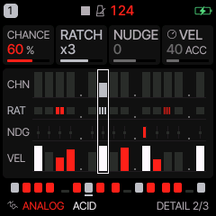
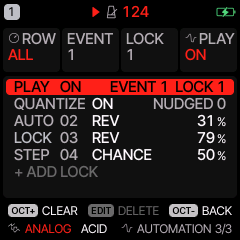
Длина, скорость, свинг
Держи SEQ: K1 LEN (1-64 шага), K2 DIV (от 4 тактов до 1/32), K3 SWING, K4 GATE. Разная длина на дорожках даёт полиметрию: 16 на драмах, 14 на басу, 7 на линии, и они плывут друг относительно друга.
Драмы
На драм-дорожке STEP это сетка: белые клавиши = шаги 1-16, чёрные = выбор линии (бочка, снейр, клэп, закрытый хэт, открытый хэт, том, рим, колокол). Выбрал линию чёрной клавишей, белыми ставишь и снимаешь удары. K1 идёт по шагам (страницы по 16), K2 линия, K3 удар, K4 акцент.
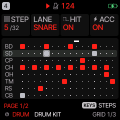
Локи тоже работают: держи клавишу шага и крути ручку. Держи EDIT на драм-дорожке: чёрные клавиши мьютят линии. Киты: DRUM KIT, DEEP KIT, TIGHT KIT, PERC KIT, DESTROY (из Glitchbox, с педалью SMASH) и киты KRIECHSTROM: FACTORY, STOMP, GATED, BUNKER, TOMB, RIOT, METAL SHOP, DRY BONES. Кит меняется ручкой PRESETS, как любой звук.
SEQ TOOLS
Держи SEQ на любой странице. Белые клавиши превращаются в инструменты для выбранной дорожки. Каждый инструмент отменяется одним SAVE (удержанием), а OCT− возвращает дорожку к тому, что было при открытии слоя.
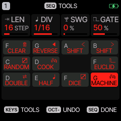
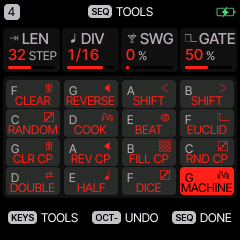
| Клавиша | Инструмент |
|---|---|
| F3 | CLEAR: очистить паттерн |
| G3 | REVERSE: задом наперёд |
| A3, B3 | SHIFT: сдвиг на шаг влево / вправо |
| C4 | RANDOM: новый бит или новые ноты в ладу на том же ритме |
| D4 | COOK: чуть-чуть меняет паттерн с каждым нажатием |
| E4 | BEAT (драмы): новый бит |
| F4 | EUCLID: удары равномерно (K1 удары, K2 шаги, K3 сдвиг; OCT+ применить) |
| G4 A4 B4 C5 | драмы: CLEAR, REVERSE, FILL, RANDOM выбранной линии |
| D5 | DOUBLE: паттерн вдвое длиннее, копией |
| E5 | HALF: только первая половина |
| F5 | DICE: целая новая партия в текущем настроении |
| G5 | MOOD: следующее настроение (его имя написано на клетке) |
DICE и настроения
DICE пишет партию под дорожку: на драмах бит, на дорожке 1 бас, на дорожке 2 стабы и аккорды, на 3 и 4 верхнюю линию, райзер или дрон. Ноты в ладу и от тоники дорожки (держи SCL и нажми клавишу, чтобы сменить тонику). Каждое нажатие даёт новое. MOOD выбирает характер:
| Настроение | Характер |
|---|---|
| MACHINE | ровные шестнадцатые на тонике, бочка на каждую долю, хэты на слабые |
| GRIND | медленнее и тяжелее: бас съезжает на малую секунду, низкие тянутые аккорды |
| MARCH 7/8 | 14 шагов, акцентированные ноты через шаг |
| GLITCH | случайные удары и ноты, пропуски в бите |
| SPIRAL | нисходящие линии, сбивки на томах |
| GHOST | разреженно: тянется тоника, арпеджио, один колокол |
| SURGE | плотно: бас на слабые доли, открытые хэты, клэпы, райзер |
| HUSH | тихо: восьмые на басу, тянутый аккорд, дрон |
Настроение не сохраняется: FM-1 включается с MACHINE.
Живые эффекты
Держи FX и нажми белую клавишу: эффект включится на весь микс, его клетка загорится. Нажми ещё раз: выключится. OCT− при зажатом FX выключает все эффекты. Чёрные клавиши мьютят дорожки. K1-K4 это макросы: FILTER, CRUSH, THROW, DEPTH. Покрути SELECT при зажатом FX: это СТЕНА (см. DAMAGE). Если хочешь, чтобы эффект звучал только пока держишь клавишу, поставь MENU > CONTROL > FX LATCH в OFF.
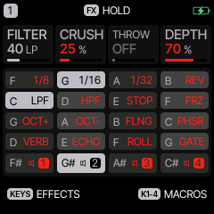
| Клавиша | Эффект | Клавиша | Эффект |
|---|---|---|---|
| F3 | повтор 1/8 | G4 | октава вверх (шиммер) |
| G3 | повтор 1/16 | A4 | октава вниз |
| A3 | повтор 1/32 | B4 | FLANGER |
| B3 | реверс | C5 | PHASER |
| C4 | свип ФНЧ | D5 | REV THROW: все посылы в ревер на максимум |
| D4 | свип ФВЧ | E5 | ECHO THROW: все посылы в дилей на максимум |
| E4 | TAPE STOP | F5 | ROLL (из Glitchbox): дробь с ускорением |
| F4 | FREEZE | G5 | GATE 1/32 (из Glitchbox) |
На любую клавишу можно повесить любой эффект: держи клавишу в слое и крути PRESETS. Там же CRUSH SWEEP и RANDOM.
Мьюты, соло, филлы, песни
Держи GLO: чёрные F#3-C#4 мьютят дорожки 1-4, белые F3-B3 соло пока держишь, C4 снимает все мьюты, D4 MIDI LEARN, E4 FILL пока держишь (играют шаги с условием FILL), F4 TAP темпа. K1-K4 громкости дорожек.
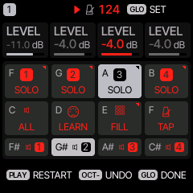
Нажми GLO: SONG, до 16 секций, в каждой на всех дорожках играют слоты проекта A-D, с повторами.
Эффекты: что есть что
Нажимай FX раз за разом: страницы идут по кругу. Крупная строка под ручками говорит, что делает страница. Любое значение, которое выключает эффект, на нуле показывает OFF.
| Страница | Что это | Как выключить |
|---|---|---|
| SENDS | сколько звука этой дорожки уходит в дисторшн, хорус, дилей и ревер (K1-K4) | ручку в OFF |
| SLICER | рубит дорожку во времени: GATE или STUTTER, в темп | K1 OFF |
| PEDAL | один эффект только на этой дорожке, как педаль перед усилителем: SOFT, HARD, FOLD, FUZZ, CRUSH, PHASR, FLANG, CHOR, MUFF (фузз), BASS (перегруз басового усилителя), SMASH (сильная компрессия и клиппинг), DAMG (износ, ниже) | K1 OFF |
| PEDAL MIX | сколько педали слышно, от сухого к мокрому | OFF |
| DELAY | один дилей на все дорожки: TIME, FEEDBACK, COLOUR, MIX | MIX OFF (все дорожки) или посыл DLY у дорожки |
| REVERB | один ревер на все дорожки: ROOM, SPRING, HALL, размер, глушение | посыл REV у дорожки |
| CHORUS | один хорус на все дорожки | посыл CHO у дорожки |
| DAMAGE | плёночная или цифровая деградация всего микса, WALL, HISS | DMG OFF, WALL OFF |
Дилей, ревер и хорус общие: дорожка попадает в них через свои SENDS. Поэтому дилей «не выключается», когда меняешь звук: у звука свой посыл DLY. DELAY > MIX в OFF глушит дилей для всех, SENDS > DLY в OFF для одной дорожки.
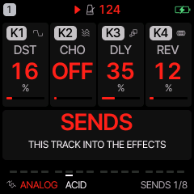
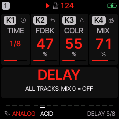
DAMAGE и СТЕНА
Последняя страница FX, на ней четыре отдельные вещи:
- DMG (K1) портит весь микс: перегруз, а дальше, по мере того как CHAR (K2) идёт от плёнки к цифре, тёмный тон, плавающая высота и провалы как у растянутой ленты, или потерянные биты, упавшая частота дискретизации и жёсткие обрывы.
- WALL (K3) это одна ручка от тишины до стены, без всякого износа: поднимает у всех дорожек дисторшн и посылы в эффекты, подмешивает под микс его сильно сжатую копию и расширяет стерео, а с 80 % включает шаги FILL. Крути прямо в игре: держи FX и крути SELECT.
- HISS (K4) это шум плёнки отдельно от всего: шипит, пока крутится лента, то есть пока нажат PLAY, а в стопе пока ты играешь и ещё секунду после. В стопе и тишине молчит. OFF: никогда.
С контроллера: CC85 это WALL, CC86 это DMG. Педаль DAMG делает тот же износ на одной дорожке (AMT, CHAR, LEVEL).
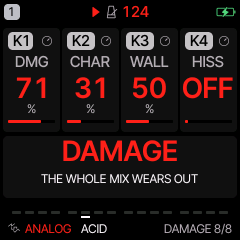
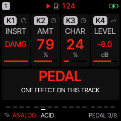
Сохранение и отмена
- Отмена: держи SAVE. Работает для смены звука, инструментов, DICE, OOPS, очистки.
- Звук: останови, нажми SAVE (USER), K1 выбери слот, OCT+, назови клавишами, OCT+. 32 слота.
- Музыка: SAVE > PROJECT: четыре проекта, K4 сохранить, K3 загрузить, K2 стереть.
- Паттерны: SAVE > PHRASES грузит готовые паттерны в дорожку.
- Автосейв: выключил и включил FM-1, музыка на месте (MENU > RESTORE LAST).
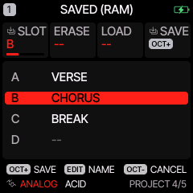
MIDI и USB-аудио
- MIDI вход по USB и TRS: каналы 1-4 играют дорожки 1-4 (другие каналы: MENU > MIDI > MIDI IN).
- Клавиши шлют MIDI на канал дорожки. Клок внутренний, по USB или по TRS.
- CC: 5 глайд, 7 громкость, 10 панорама, 71 резонанс, 74 яркость, 72/73/75 релиз/атака/спад, 91/93/94 ревер, хорус, дилей. На GLCH 74 срез, 71 резонанс.
- MIDI LEARN: держи GLO, нажми D4, покрути ручку на FM-1 и ручку на контроллере.
- USB-аудио: FM-1 виден как стерео аудиовход KRIECHSTROM. Пиши в любую DAW, драйвер не нужен. В KRIECHSTROM служебная USB-консоль выключена по умолчанию, поэтому macOS 13-15 сразу видит аудиовход.
Меню и экран
Держи HOME: меню. ALGORITHM переключает вкладки, PRESETS строки, любая ручка меняет значение, HOME закрывает. KRIECHSTROM стартует с темой STROM (чёрное с красным), с крупными цифрами (LARGE) и с подсказками (HELP). Другие цвета: DISPLAY > COLOR.
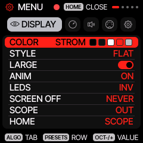
Все звуки
171 звуков. В скобках категория для фильтра LIST на SAVE > PRESETS (K4).
ANALOG · 24
SAW LEAD (лид), SOFT PAD (пэд), SQR BASS (бас), PWM STR (пэд), ACID (бас), SINE KEY (клавиши), RAVE (лид), SUB BASS (бас), PLUCK (щипок), BRASS (лид), WIND (лид), STRINGS (пэд), RUST SAW (бас), PISTON (бас), COLD SQUARE (бас), BLACK PULSE (бас), IRON LUNG (бас), SUB FLOOR (бас), HAMMER (бас), SEQUENCE (бас), SPINE (бас), SLOW BURN (бас), HOLLOW (пэд), GUTTER (бас)
FM6 · 20
TINE EP (клавиши), BELL (щипок), FM BASS (бас), BRASS (лид), PAD (пэд), MARIMBA (щипок), ORGAN (клавиши), PLUCK (щипок), BROKEN PIANO (клавиши), GLASS BELL (щипок), CHAPEL (клавиши), WIRE HARP (щипок), MERCY (клавиши), SHARDS (щипок), GRAVE BELL (щипок), RUSTED EP (клавиши), TOY PIANO (клавиши), MOURNING (пэд), FERRIC (бас), NEEDLE (щипок)
PHASE · 16
BRASS (лид), ORGAN (клавиши), STRING (пэд), RESO (лид), BELL (щипок), WIRE (щипок), SICK PAD (пэд), ICE (пэд), STATIC ANGEL (пэд), COMA (пэд), VAULT (пэд), LAST LIGHT (пэд), HYMN (пэд), SCREAM LEAD (лид), RAZOR (лид), SIREN (пэд)
LOFI · 5
PULSE LD (лид), WAVE BASS (бас), ARP 8BIT (лид), WAVE LEAD (лид), STEP LEAD (лид)
SAMPLE · 3
PIANO (клавиши), FLUTE (лид), SAX (лид)
VOICE · 4
CHOIR AAH (пэд), VOX LEAD (лид), WOW BASS (бас), WHISPER (шум и FX)
TRIO · 5
FAT BASS (бас), ARP LEAD (лид), SYNC LEAD (лид), RING BELL (щипок), CHIP CHOIR (пэд)
GLCH · 48
DESTROYER (лид), FUZZ BASS (бас), BROKEN (шум и FX), SCREAM (лид), NOIZ HIT (шум и FX), HUM (бас), NASTY FM (лид), CRUSH LEAD (лид), SQR FUZZ (бас), FM BASS (бас), MELTDOWN (лид), RUST SAW (бас), REESE (бас), 808 DIST (бас), GRIT BASS (бас), GROWL (бас), ACID FUZZ (бас), OCTA SMASH (бас), GRINDER (бас), FILTH (бас), SCAR TISSUE (лид), DEAD WIRE (лид), BITROT (бас), BREAKER (бас), FAULT LINE (лид), FUZZ GUT (бас), VOLTAGE (лид), NERVE (щипок), WIRE BRUSH (шум и FX), SPLINTER (шум и FX), BLOODLINE (бас), SICK ENGINE (бас), RUST BELT (бас), CONCRETE (бас), STATIC LEAD (лид), HOWLER (лид), BURN UNIT (лид), CAUTERIZE (щипок), STUTTER BASS (бас), FRACTAL (шум и FX), HUSHED FUZZ (пэд), WARHEAD (бас), SCREWDRIVER (лид), CORRODED PAD (пэд), TERMINAL HUM (пэд), BROKEN RADIO (шум и FX), SPIKE (щипок), MACHINE GUN (шум и FX)
GRAIN · 4
CLOUD PAD (пэд), GLITCH (шум и FX), FROZEN (пэд), SHIMMER (пэд)
PHYS · 9
BELL TREE (щипок), MARIMBA (щипок), PLUCK (щипок), BOWED METAL (пэд), KALIMBA (щипок), HAND DRUM (драмы), TOMS (драмы), DRONE STRING (пэд), HARP (щипок)
DRUM · 13
DRUM KIT (драмы), DEEP KIT (драмы), TIGHT KIT (драмы), PERC KIT (драмы), DESTROY (драмы), FACTORY (драмы), STOMP (драмы), GATED (драмы), BUNKER (драмы), TOMB (драмы), RIOT (драмы), METAL SHOP (драмы), DRY BONES (драмы)
NOISE · 18
WIND (шум и FX), RAIN (шум и FX), ARCADE (шум и FX), METAL (шум и FX), STATIC (шум и FX), TV DEATH (шум и FX), CRACKLE (шум и FX), FEEDBACK (шум и FX), VACUUM (шум и FX), RISER (шум и FX), GEIGER (шум и FX), RADIO GHOST (шум и FX), GENERATOR (шум и FX), RUST WIND (шум и FX), EARTHQUAKE (шум и FX), DEAD AIR (шум и FX), ALARM (шум и FX), SHOCK (шум и FX)
SLICE · 2
CHOP (драмы), STUTTER (драмы)
Авторы и исходники
KRIECHSTROM это свободная программа под GNU GPL 3.0. Форк Felucca (Leo Kuroshita, Hügelton Instruments, GPL-3.0, движки под MIT). Из Glitchbox (erikdevos): движок GLCH, кит DESTROY, педали MUFF / BASS / SMASH, ROLL и GATE. Идеи из DIRGE (sinscum). Исходники именно этой сборки лежат на главной.